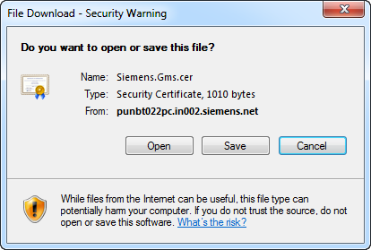

Install the Web Application Certificate
The certificate you select while creating the web application is the same certificate that you must install in the certificate store under Current User > Trusted Root Certification Authority and Current User > Trusted Publisher certificate before launching the Windows App client. You can do this using the following procedure.
- You have created a web application using SMC and the HTTPs URLs display.
- The Desigo CC web page is open in the browser, and the Desigo CC tab contents are displayed.
- Do one of the following:
- In the Desigo CC web page, click the Click Here link on the Desigo CC page for a web application.
- In the Desigo CC web page, click the Support tab, and then select the Web Application Certificate link.
- In the File download – Security Warning dialog box, click Open.

- In the Certificate dialog box, click Install Certificate.

- Depending on the type of certificate used, proceed with importing the certificate by doing one of the following:
- If you used a self-signed certificate while creating a web application, then you must install it in the Trusted Root Certification Authorities and Trusted Publisher Windows Certificate store (See Install Certificates in the Trusted Root Certification Authorities (TRCA) Store and Install Certificates in the Trusted Publisher (TP) Store in Web Application Procedures).
- If you used a host certificate while creating a Web Application, then you must install it in the Trusted Publisher Windows Certificate store. You must also install the root certificate of the host in the Trusted Root Certification Authorities store (See Install Certificates in the Trusted Root Certification Authorities (TRCA) Store and Install Certificates in the Trusted Publisher (TP) Store in Web Application Procedures).
NOTE: If host certificates created with SMC are used for signing the Web Application and the browser is configured to check the publisher's certificate revocation, the Security Warning message may display, even after installing the certificate. In this case, you can either add the website to the Trusted Sites zone to resolve the issue or ignore the warning and click Install (for Windows App client).